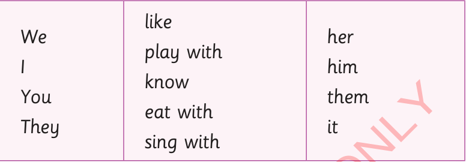
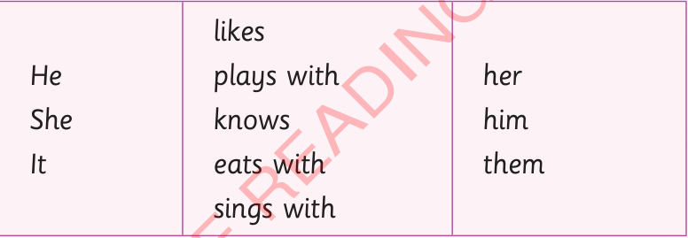

Available words: I, We, You, She, It, They, He. Type an answer or choose a suggestion.
(e)Make sentences orally from the table below.

(f)Make sentences orally from the table below.

Activity 3: Reading practice
Read the following story.Then, fill in the blanks using the words provided in the box.
Our school sports day
Mtakuja Primary School has a sports day every term. blank is always held on the last Friday of the term. Last Friday, pupils gathered at the playground. blank were waiting for the inter-class competitions to begin. There were many class teams.